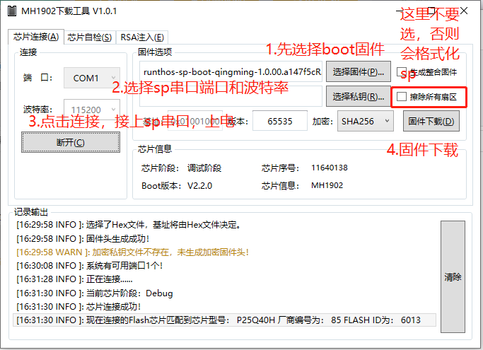
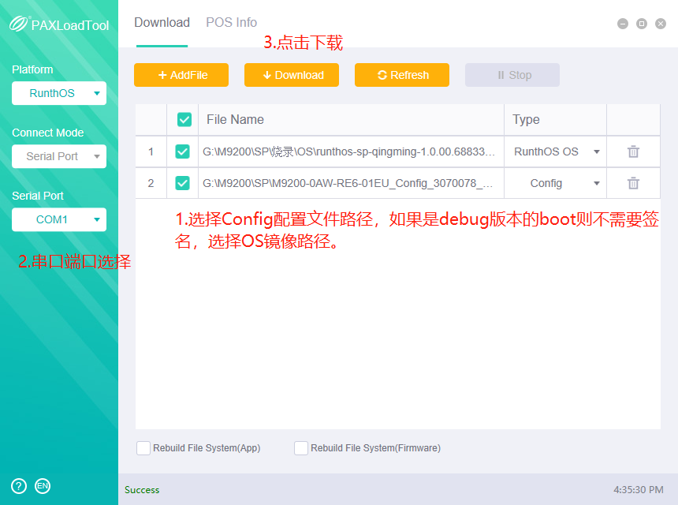

M92xx project mark
记录m92xx项目相关的
Jenkins本地编译
账户：xxxroot 密码：uL.#%71xC(0 进入Jenkins方法： sudo su -s /bin/bash jenkins 文件路径：/home/jenkins/workspace
快捷方式
查看modem广和通版本号：
M92xx:/ $ getprop | grep gsm.version.baseband
[gsm.version.baseband]: [19402.4004.11.06-GMS]
打开短信电话版本：19402.4004.11.06-GMS
最新版本：19402.4004.00.01.11.05
查看IMEI指令：
xxx_adb shell "getprop | grep xxx.persist.wnet.imei"
常见问题
如何打开adb调试？
settings -> About phone（关于手机） -> 连续点击Build number(版本信息) 提示
you are now a developersettings -> 开发者选项 -> 打开usb调试
常用暗码
进入工厂测试:!4444=
进入扫码应用：!8888=
进入logkit：!3646622=
如何抓取log
进入logkit：计算器!3646622=
确保log默认保存位置为sdcard0，如下：

点击右上角圆形按钮开启log抓取:
复现问题后，再次点击圆形按钮，点击package打包生成压缩包：
log pakage生成目录如下:
可以使用adb指令将log导出，或者双击导出脚本
logkit_pull_tool.bat也可导出：
adb pull /storage/self/primary/Android/data/com.qualcomm.qti.logkit.lite/files/logdata/ .
如何从Jenkins下载最新固件
首先点击Jenkins网址并输入账户密码进入Jenkins工作界面，工作界面分为user和userdebug两大编译板块，userdebug为monkey或者调试用，user通常是版本发布使用。
Jenkins网址：http://172.16.2.95:8080
账户：admin
密码：admin123
点击
M92xx_xxx_branch_user进入，并依次点击workspace、output目录，最新Uniphiz包和fac底包都可在里面下载。

如何下载SP固件
m92xx项目Android使用高通qcm2290平台，sp使用兆迅MH1902S，下载功能分为两大块，SP(boot/os/config)，AP(paydroid tool/Qfil)，主要介绍一下下载工具及方式。切记sp下载请关闭其他占用串口的程序！
SP boot下载
下载工具：MH1902 ISP.exe

SP OS/config配置文件下载
下载工具：xxxLoadTool -> xxxLoadTool.exe

fastboot命令下载
目前Uniphiz包中已经包含sp boot/os最新镜像，也就是说下载Uniphiz包后sp也将更新，其原理是通过fastboot命令升级的，命令如下：
paydroidboot flash sp_boot runthos-sp-boot-qingming.sig
paydroidboot flash sp_monitor runthos-sp-qingming.bin
fastboot flash cfg M92xx-EM_V01_VFF.ini
烧录过程如下：
SP问题记录
如果没下载CID，只能下载不带签名的boot和os，如果下载带签名的会失败。
工厂流程问题
查看生产相关信息
systool get sysver扫码标志位
.isScannerActive=0，指令：systool get isNewScannerActive